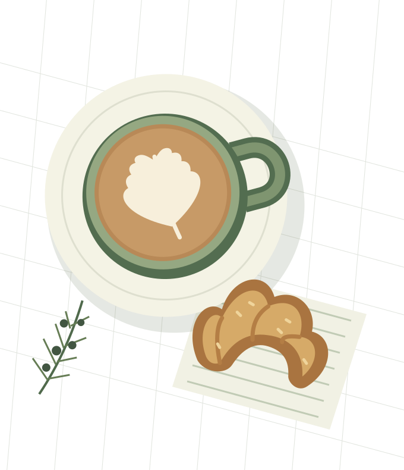

A proper cup
Espresso, filter, or something with a little milk. Ask us what’s on the grinder today.
Your neighbourhood coffee spot
Coffee made with care, something warm from the oven, and a little room in your day. Come as you are. Stay a while.
Plan your visit18 Willow LaneBristol, BS1 4AA

Hello, neighbour.
We built Juniper around a simple idea: the everyday deserves a little attention. A carefully pulled espresso. A table by the window. A familiar hello. Nothing complicated, just the good things, done well.
Espresso, filter, or something with a little milk. Ask us what’s on the grinder today.
A small, seasonal menu of baked things, good bread, and lunches worth pausing for.
Bring a book, bring a friend, or just bring yourself. There’s a seat for every kind of morning.
Around the corner
Find us on the corner, just by the little green. Walk-ins welcome; no reservation needed.
Plan your visitMonday–Friday · 7:30–17:00
Saturday–Sunday · 8:30–16:00